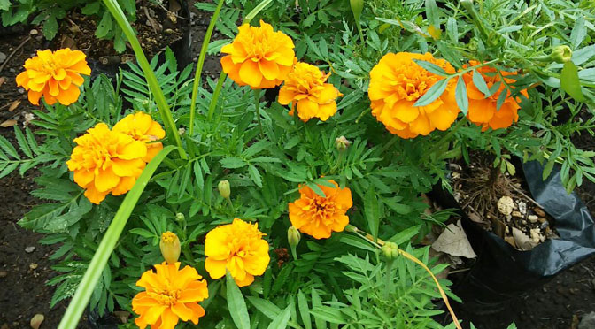

La importancia de La ecología en nuestro país ha sido y es muy grande y hasta ahora todavía no hemos podido apreciar la importancia de la vegetación y especies en el territorio salvadoreño que poco a poco va disminuyendo.
Razones para plantar un Arbol
¿Cuanto dura tu basura?
Curiosidades del reciclaje
Los paises ecologicos
La ciudad Ecologica: Kamikatsu
Cuidemos JUNTOS el planeta
ECOTERRA
Ecologia en El Salvador
Vamos a RECICLAR
Guia practica para reciclar
ECOTIPS